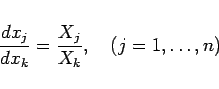
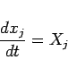
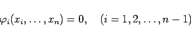
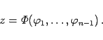
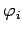
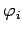

Inhalt Index DeskTop Bronstein

 Differentialgleichungen Partielle Differentialgleichungen Partielle Differentialgleichungen 1. Ordnung Lineare partielle Differentialgleichungen 1. Ordnung
Differentialgleichungen Partielle Differentialgleichungen Partielle Differentialgleichungen 1. Ordnung Lineare partielle Differentialgleichungen 1. Ordnung


Die Integration der homogenen partiellen linearen Differentialgleichung ist der Integration des sogenannten charakteristischen Systems
äquivalent. Zur Lösung dieses Systems können zwei Wege eingeschlagen werden:
|  | (9.69b) |
übergeht.
|  | (9.69c) |
gesetzt wird.
|  | (9.69d) |
unabhängig sind (s. Fundamentalsystem von Lösungen), dann gilt
|  | (9.69e) |
Dabei ist  eine beliebige Funktion der n-1 Argumente  und eine allgemeine Lösung der homogenen linearen Differentialgleichung von (9.68a).
eine beliebige Funktion der n-1 Argumente  und eine allgemeine Lösung der homogenen linearen Differentialgleichung von (9.68a).